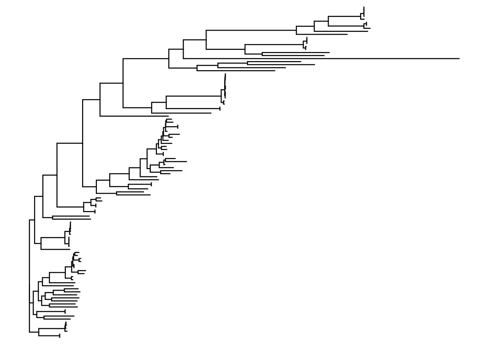
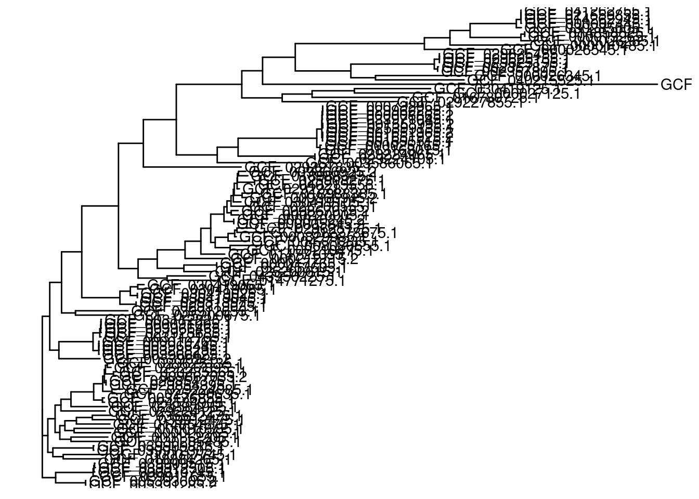
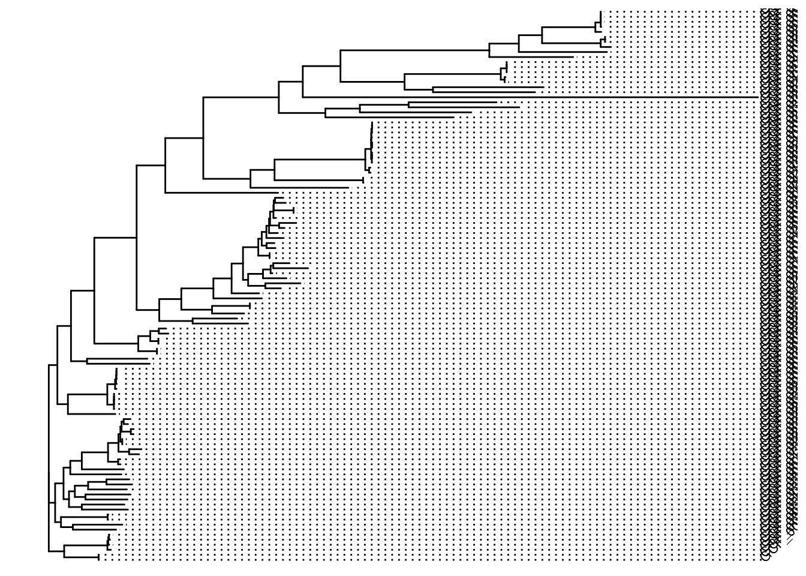
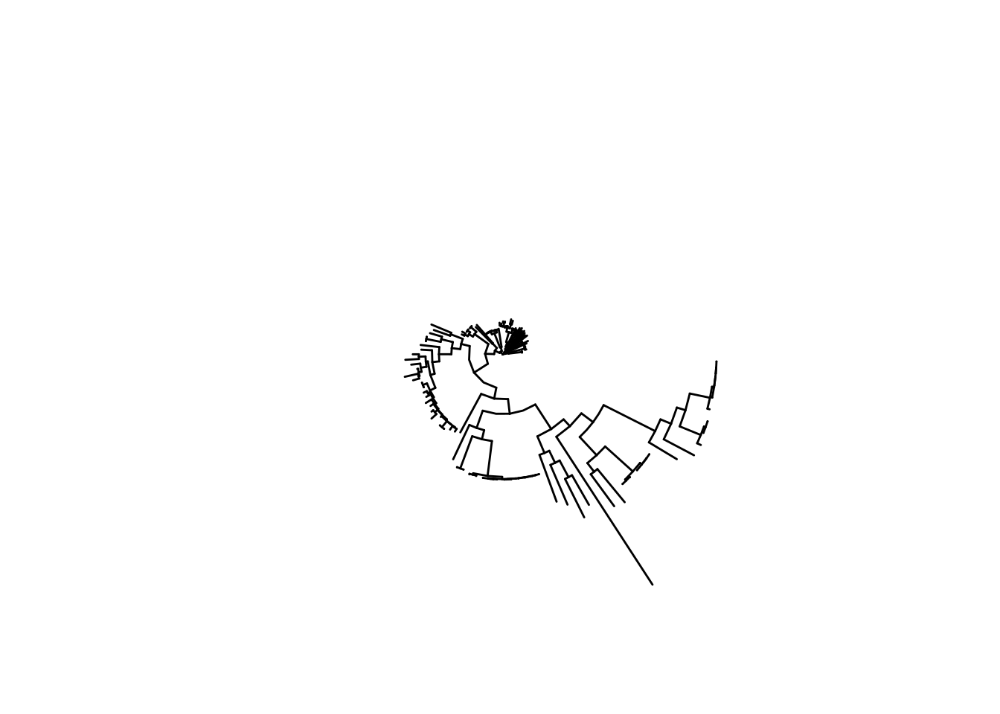
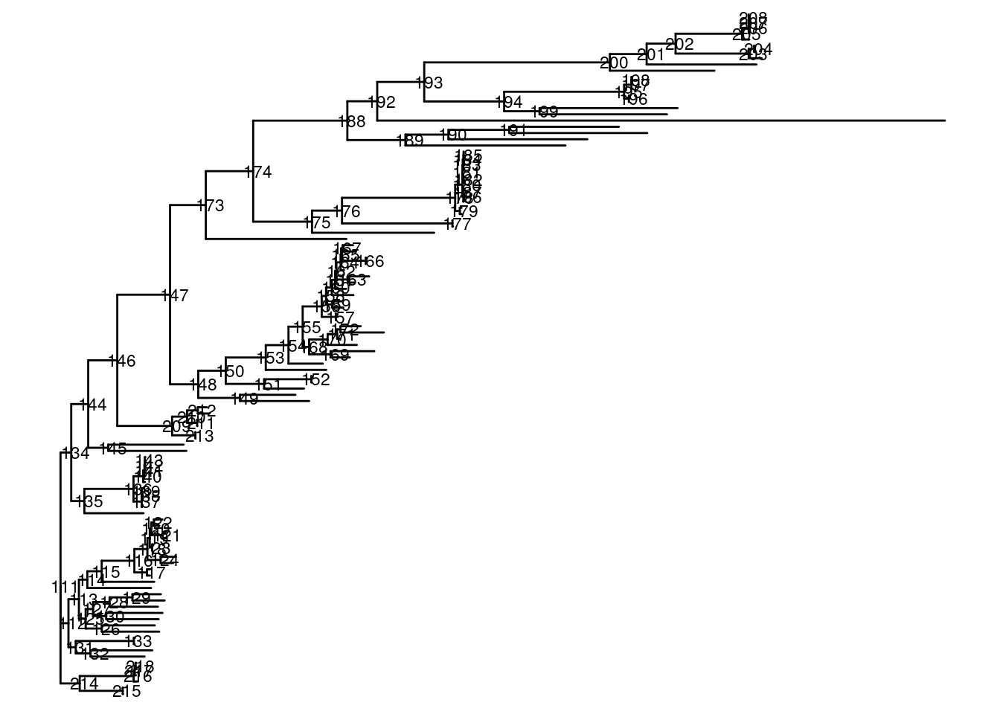
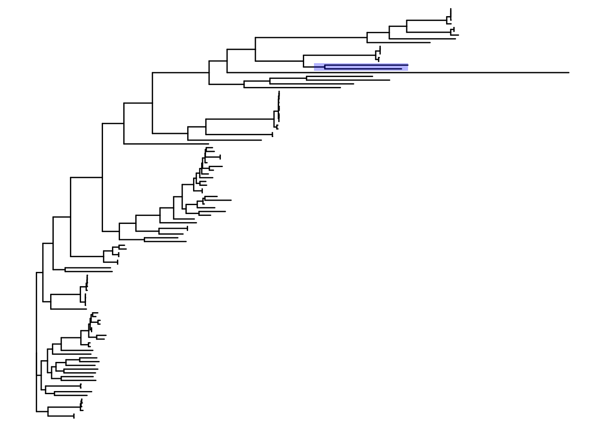
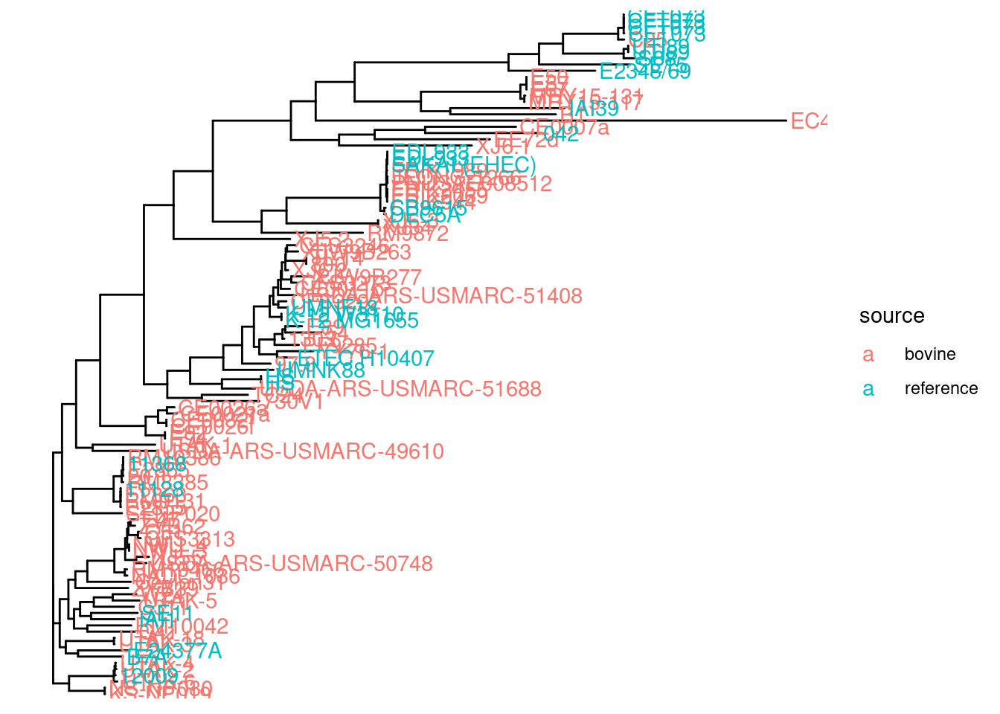
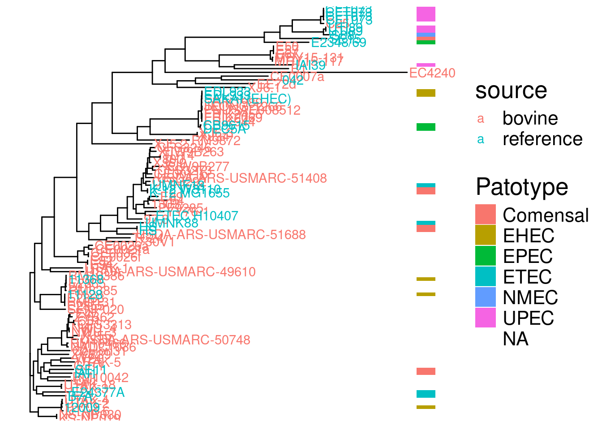

install.packages("tidyverse")
if (!requireNamespace("BiocManager", quietly = TRUE)) {
install.packages("BiocManager")
}
BiocManager::install("ggtree")
BiocManager::install("treeio")Graph: ggtree and its main functions
Introduction
The ggtree package in R is a powerful tool for visualizing and annotating phylogenetic trees. It is built on top of the ggplot2 package and allows for highly customizable and publication-ready tree visualizations.
Prerequisites
To follow this tutorial, ensure you have the following R packages installed:
We will use a .nwk dataset for demonstration.
library(ggtree)
library(treeio)
library(ggplot2)
library(dplyr)Loading a Phylogenetic Tree
ggtree supports various formats of phylogenetic trees. The most common is the Newick format.
# Load the tree from a Newick file
tree <- read.newick("example_2_phylo.nwk")
# Print tree structure
print(tree)
Phylogenetic tree with 110 tips and 108 internal nodes.
Tip labels:
GCF_029224125.1, GCF_024584905.1, GCF_003176855.1, GCF_009867035.2, GCF_030285565.1, GCF_029227895.1, ...
Node labels:
, 0.981998, 0.987349, 0.946895, 0.994059, 1.000000, ...
Unrooted; includes branch lengths.Basic Tree Visualization
Visualizing the tree is straightforward:
# Basic tree plot
p <- ggtree(tree)
print(p)
Adding Tip Labels
You can add labels to the tips of the tree using geom_tiplab:
p <- ggtree(tree) +
geom_tiplab()
print(p)
Parameters for geom_tiplab
size: Adjusts the size of the labels.align: Aligns labels horizontally.angle: Rotates labels (useful for circular trees).
p <- ggtree(tree) +
geom_tiplab(size = 3, align = TRUE, angle = 45)
print(p)
Tree Layouts
ggtree supports various layouts for trees, such as:
rectangular(default)circularfanslantedradial
# Circular layout
p_circular <- ggtree(tree, layout = "circular")
print(p_circular)
# Fan layout
p_fan <- ggtree(tree, layout = "fan")
print(p_fan)Annotating Trees
Adding Node Labels
To annotate nodes, use geom_nodelab:
p <- ggtree(tree) +
geom_nodelab(aes(label = node), size = 3)
print(p)
Highlighting Clades
Highlight specific clades with geom_hilight:
p <- ggtree(tree) +
geom_hilight(node = 199, fill = "blue", alpha = 0.3)
print(p)
Parameters for geom_hilight
node: Specify the node ID to highlight.fill: The fill color for the highlight.alpha: Transparency of the highlight.
Annotating Specific Tips
p <- ggtree(tree) +
geom_tippoint(aes(color = label), size = 3)
print(p)Adding Metadata
Metadata can be merged into the tree object and displayed, metadata is a data.frame:
# Cargar metadata
metadata <- readr::read_tsv("Experiment_Design_example_2.tsv")
metadata <- metadata %>%
rename(label = Assembly.Accession)
# The rows have to be in the same order as the tree
metadata_ordered <- metadata %>%
filter(label %in% tree$tip.label) %>%
arrange(match(label, tree$tip.label))
metadata_ordered$Phylogroup <- replace(metadata_ordered$Phylogroup, is.na(metadata_ordered$Phylogroup), "NA")
metadata_ordered_2 <- metadata_ordered[,c(-1,-2)]
rownames(metadata_ordered_2) <- make.unique(metadata_ordered_2$Strain)
colnames(metadata_ordered_2)[1] <- "label"
# Change tip label
tree$tip.label <- metadata_ordered_2$label# Plot tree with metadata
p <- ggtree(tree) %<+% metadata_ordered_2 +
geom_tiplab(aes(color = source))
print(p)
Creating Heatmaps
Use gheatmap to add heatmaps to the tree:
# Example matrix
set.seed(123)
matrix_data <- data.frame(Patotype = metadata_ordered_2$Patotype)
rownames(matrix_data) <- make.unique(metadata_ordered_2$label)
# Add heatmap
gheatmap(p, matrix_data, width=0.05,
colnames=FALSE, legend_title="Patotype", color = NA, ) +
theme(text = element_text(size = 20))
Summary
We will load a phylogenetic tree in Newick format for demonstration:
# Load a tree file
example_tree <- read.newick("example_2_phylo.nwk")
example_tree$node.label <- round(as.numeric(example_tree$node.label), digits = 3)Circular Layout Visualization
Circular layouts are excellent for presenting large or complex trees. They allow for efficient space usage and a visually appealing presentation.
# Circular tree with basic styling
circular_tree <- ggtree(example_tree, layout = "circular") +
geom_tiplab(size = 2, aes(angle = angle), offset = 0.5) +
geom_nodelab(aes(label = round(as.numeric(node.label), 2)), size = 2, nudge_y = 0.5) +
ggtitle("Circular Phylogenetic Tree")
circular_treeHighlighting Clades in Circular Trees
Highlighting specific clades can make the tree more interpretable. Use the geom_hilight function:
# Highlight specific clades
highlight_tree <- circular_tree +
geom_hilight(node = 45, fill = "lightblue", alpha = 0.5) +
geom_hilight(node = 60, fill = "lightgreen", alpha = 0.5)
highlight_treeAdding Heatmaps to Circular Trees
We can add metadata as heatmaps around the tree:
# Example metadata
metadata <- data.frame(
label = example_tree$tip.label,
Category = sample(c("A", "B", "C"), length(example_tree$tip.label), replace = TRUE)
)
# Prepare metadata
metadata <- metadata %>%
mutate(Category_Color = case_when(
Category == "A" ~ "#FF5733",
Category == "B" ~ "#33FF57",
Category == "C" ~ "#3357FF"
))
# Merge metadata with tree
p_circular_heatmap <- circular_tree %<+% metadata +
geom_tippoint(aes(color = Category), size = 2) +
scale_color_manual(values = metadata$Category_Color)
p_circular_heatmapStyling Trees with Advanced Themes
ggtree provides options to customize the appearance of trees using themes. Here’s how to use them effectively.
Customizing Themes for Trees
# Applying a theme with a clean background
styled_tree <- circular_tree +
theme_tree2() +
theme(
plot.background = element_rect(fill = "#f9f9f9", color = NA),
panel.border = element_blank(),
panel.grid = element_blank(),
axis.text = element_blank(),
axis.ticks = element_blank()
)
styled_treeAdding Multiple Aesthetic Layers
Combine multiple layers for richer visuals:
# Adding node points and branches with customized colors
layered_tree <- ggtree(example_tree, layout = "circular", branch.length = "none") +
geom_tree(color = "darkgrey", size = 0.6) +
geom_tippoint(aes(color = label), size = 3) +
scale_color_viridis_d() +
theme(
legend.position = "right",
legend.title = element_text(size = 12),
legend.text = element_text(size = 10),
plot.title = element_text(size = 14, hjust = 0.5, face = "bold")
) +
ggtitle("Layered Circular Tree Visualization")
layered_treeCombining Trees with ggnewscale
Use the ggnewscale package to add multiple scales of colors:
# Adding new scale for different metadata layers
multi_scale_tree <- ggtree(example_tree, layout = "circular") +
geom_tippoint(aes(color = Category), size = 2) +
scale_color_brewer(palette = "Set2", name = "Category") +
ggnewscale::new_scale_color() +
geom_tippoint(aes(fill = Category), shape = 21, size = 3, color = "black") +
scale_fill_brewer(palette = "Set1", name = "Fill Category") +
theme(
legend.position = "right",
legend.title = element_text(size = 12),
legend.text = element_text(size = 10),
plot.title = element_text(size = 14, hjust = 0.5, face = "bold")
) +
ggtitle("Tree with Multiple Aesthetic Layers")
multi_scale_tree